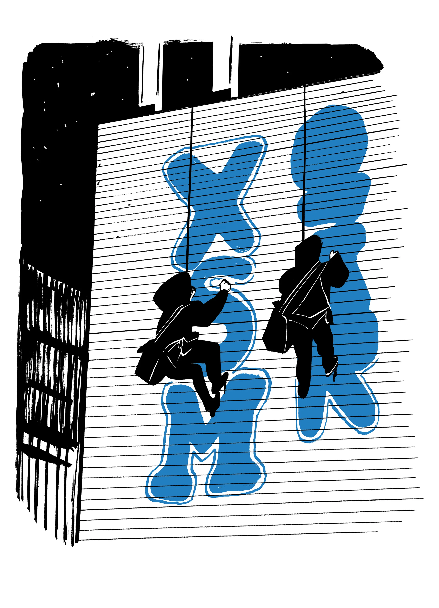
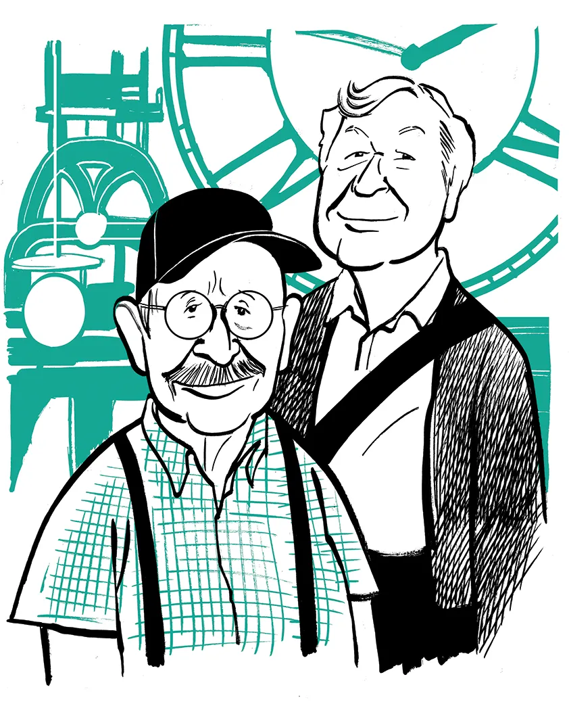
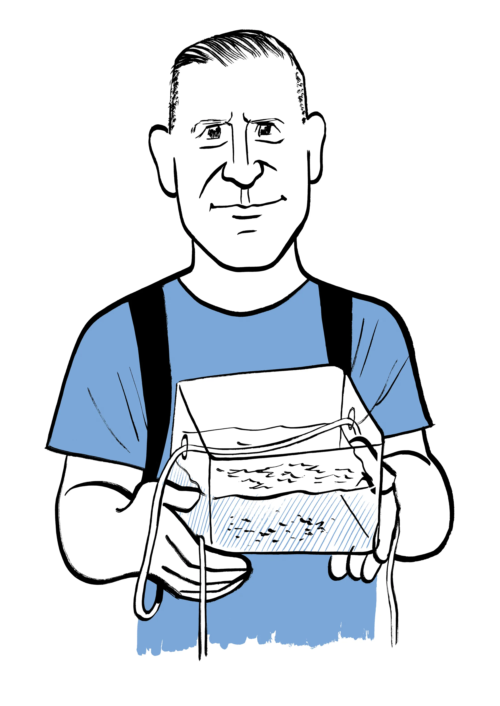

How to Tag a Skyscraper, Six Hundred Feet Up
Two graffiti writers reveal how they reached the tops of New York’s tallest buildings—and what keeps drawing them back.
Read at The New Yorker →A sample of my work published in The New Yorker, The Associated Press, Gothamist, The Village Voice, Complex and elsewhere. My most recent AP stories are here.
Narrative reporting on New York's characters, neighborhoods, and hidden worlds.

Two graffiti writers reveal how they reached the tops of New York’s tallest buildings—and what keeps drawing them back.
Read at The New Yorker →
An aging clock master wages a years-long campaign to preserve one of City Hall’s most overlooked traditions.
Read at The New Yorker →/span>
A citizen scientist catalogs the odors rising from one of New York’s most polluted waterways.
Read at The New Yorker →/span>Mahmood Mamdani publishes a book about dictators as his son prepares to lead New York City.
Read at The New Yorker →/span>